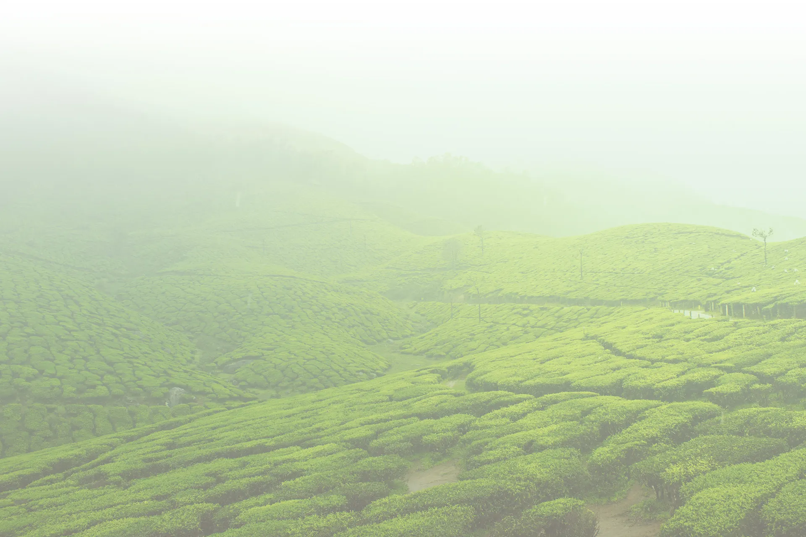
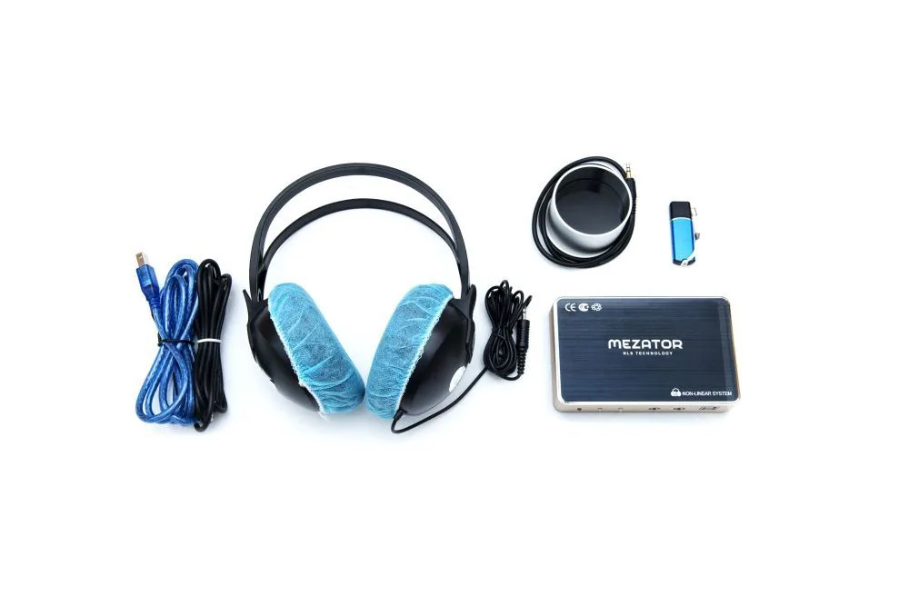
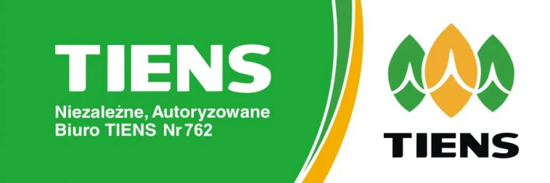
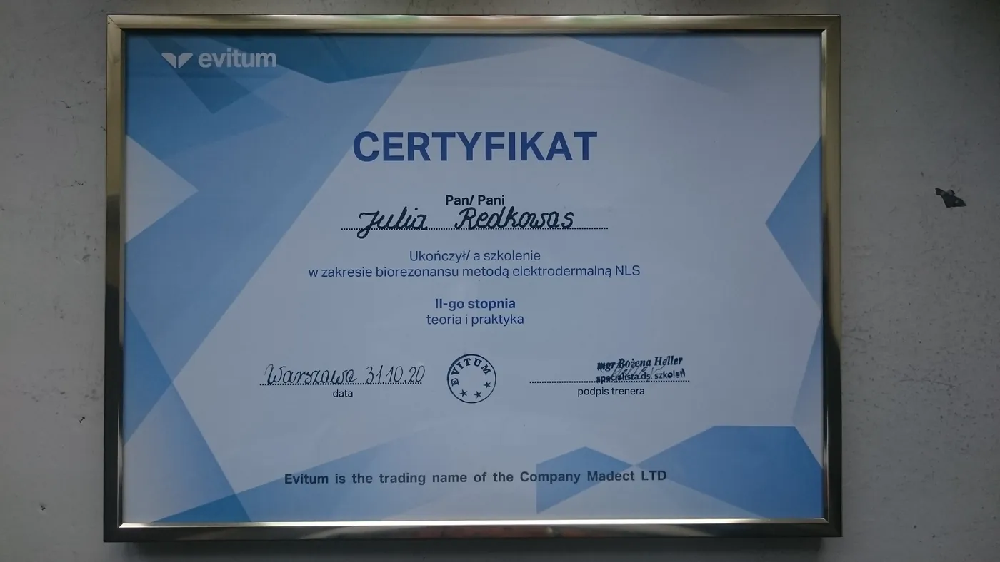
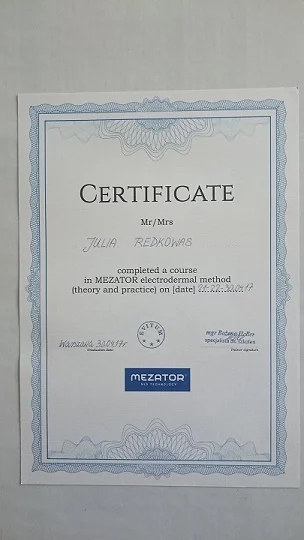
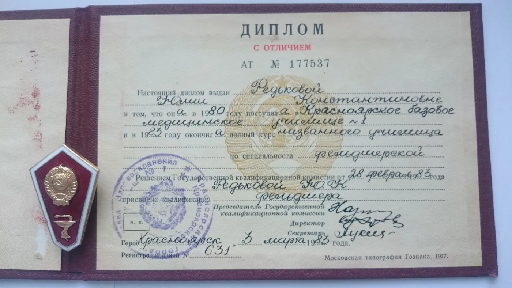
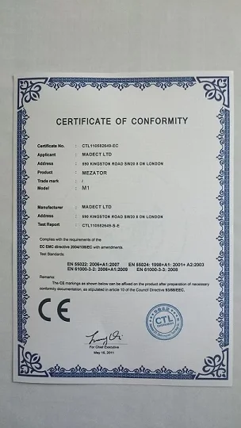
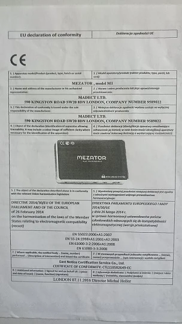

Diagnozujmy się
Badanie metodą biorezonansu magnetycznego NLS-MEZATOR M1 i spokojna rozmowa o wyniku. W biurze przy ul. Piłsudskiego w Konstancinie-Jeziornie albo w naszym mobilnym gabinecie.
375 zł diagnostyka, badanie i konsultacja, 60 minut

Badanie urządzeniem NLS-MEZATOR M1
Podczas badania siedzą Państwo wygodnie, bez krzyżowania nóg i rąk, ze słuchawkami urządzenia na uszach. Po badaniu omawiamy wynik podczas konsultacji.
Badanie poprzedza szczegółowy wywiad, a jego zakres ustalamy wspólnie z Państwem. Przyjmujemy dorosłych i dzieci od 6. roku życia.
- Biuro w Konstancinie-Jeziornie, ul. Piłsudskiego 32
- Mobilny gabinet kompleksowej diagnostyki
- Filie partnerów w 9 miastach Polski
Uzyskane porady nie zastępują terapii zleconej przez Państwa lekarza.
Diagnostyka online
Oferujemy diagnostykę, badanie i konsultację online - po przesłaniu nam materiału w pojemniku jałowym: paznokci lub niefarbowanych włosów.
- PrzesyłkaPaznokcie lub niefarbowane włosy w pojemniku jałowym
- BadanieBadamy przesłany materiał
- Konsultacja onlineOmawiamy z Państwem wynik
Jedna wizyta, trzy liście
Jak w znaku Tiens: dwa zielone liście po bokach i złoty w środku. W środku zawsze jest rozmowa z człowiekiem.
-
Badanie
Wywiad, a potem pomiar urządzeniem NLS-MEZATOR M1 w pozycji siedzącej, ze słuchawkami na uszach.
-
Konsultacja
Omawiamy wynik przy jednym stole, bez pośpiechu. Jedna osoba prowadzi Państwa od początku do końca i odpowiada na pytania.
-
Suplementacja
Jeśli Państwo chcą, pomagamy dobrać suplementy diety Tiens. Suplement diety nie zastępuje zróżnicowanej diety i zdrowego trybu życia.
Cennik
- Diagnostyka, badanie, konsultacja60 minut
- 375 zł
- Metaterapia, 1 seans20-30 minut
- 150 zł
Jak się przygotować
Dzień wcześniej
Bez alkoholu. Leki i suplementy, z których można na chwilę zrezygnować bez szkody dla zdrowia, odstawiamy tylko po rozmowie z lekarzem.
W dniu badania
Bez kawy i napojów energetyzujących, mniej papierosów, więcej wody. Bez intensywnego sportu i wysiłku fizycznego.
2-2,5 godziny przed
Żadnych posiłków ani napojów poza wodą.
O nas
25 lat prowadzimy działalność propagującą zdrowy tryb życia w Europie, w Polsce od 2005 r. jako Autoryzowane Biuro Tiens.
Prowadzimy Niezależne, Autoryzowane Biuro TIENS nr 762 i mobilny gabinet.
Badanie można wykonać w biurze w Konstancinie-Jeziornie, w mobilnym gabinecie albo w filiach naszych partnerów w 9 miastach - od Wisły po Gorzów Wielkopolski.

Certyfikaty
Szkolenia z obsługi urządzenia i metody NLS oraz dokumenty zgodności urządzenia. Przesuń palcem lub myszą.





Umów wizytę
Zadzwoń i zarezerwuj termin w biurze w Konstancinie-Jeziornie albo w mobilnym gabinecie.
+48 511 526 106ul. Piłsudskiego 32, 05-500 Konstancin-Jeziorna
tiens762@gmail.com
Filie naszych partnerów
- Bydgoszcz609 232 087
- Gorzów Wlkp.698 649 980
- Konstancin-Jeziorna695 894 673
- Łódź575 919 240662 708 313
- Międzyrzecz603 638 808
- Piotrków Tryb.502 614 698
- Poznań609 046 706
- Środa Wlkp.604 230 330737 455 206
- Wisła604 488 061604 881 860